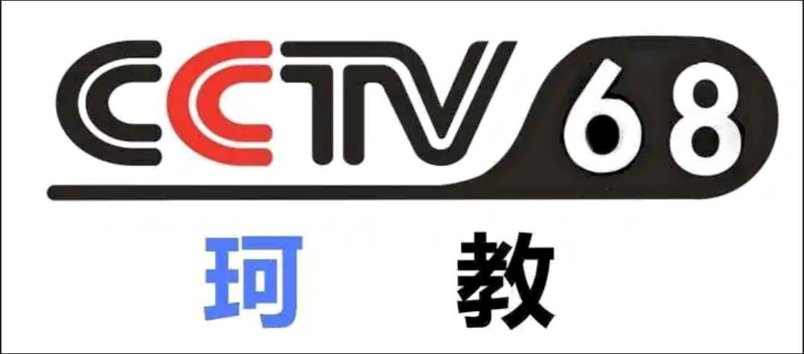

|  |
末日时在做什么？ |
|
| 角色形象 |
珂朵莉·诺塔·瑟尼欧里斯 |
身份背景
|
|
| 奥尔兰多商会第四仓库——妖精仓库的妖精兵少女，属于无征种，像珂朵莉的黄金妖精一族是军方和商会用来对付十七兽的武器 。 |
| 珂朵莉是最强圣剑“瑟尼欧里斯”的适合者 ，作为仓库中年龄最大的妖精，扮演着成体妖精兵前辈的角色。 |
相貌衣着
|
| 穿着打扮朴素。大大的灰色帽子压的低低的，身上穿着同样颜色的大衣，灰色帽子丢失后，威廉送了他一顶扎着花的帽子。 |
| 她身材娇小 ，有着如同海洋一般的眼睛 ，一头蓝发，但随着前世侵蚀的加深，头发也逐渐变红。 |
性格特点
|
| 会在一些奇怪的地方爱面子。会希望自己看起来年长一些，让学妹们认为她值得依靠，才费尽心思逞强给人看。 |
| 在妖精仓库时她的气质格外稳重，态度也显得淡然。不过这并非平时的本色，每当她内心感到动摇或者迷惘，色泽如海洋一般的眼睛就会明显闪烁。 |
| 因为恋爱的关系，会观察威廉观察的很仔细，战斗方式以及强度，乃至威廉自身的想法目前在这个世界上她是最了解的。 |
| 比起踌躇不前，她更愿意面对问题。因此被艾瑟雅评价“珂朵莉的个性是不顾后果，哪怕要支付莫大的代价，都要引发奇迹的发生的个性。” |
角色能力 |
魔力
|
| 将名为“魔”的火招进自己的心脏内测，催燃到旺盛，再把那股力量取到外头运用，不过这种热度会对施术者的身体造成负担，即使想取得某种程度以上的热能，施术者本身的生命力也会加以抑制。这一点直接决定了每个种族所能动用的魔力上限。因此，假如有身体对存活并不执著的扭曲生命，就能使出其他种族无法仿效的庞大力量。 |
遗迹兵器
|
| 亦称圣剑（carillon）。珂朵莉手持的是瑟尼欧里斯（Seniorious）。极位古圣剑瑟尼欧里斯是总共以四十一块金属片组成，再用咒力线连接成形的剑。它跟工房生产的后期品不同，它是在战场靠着奇迹似的巧合才诞生的一把剑。右挥斩龙、左挥斩神。是历史与实绩兼备的圣剑中之圣剑。也是第十八代正规勇者与第二十代正规勇者的搭档，也是英雄性的象征。 |
| |